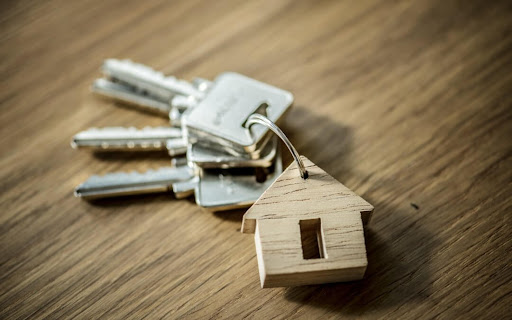

Independizarme
Independizarse de los padres es una decisión muy importante en nuestras vidas, es un momento lleno de incertidumbre, miedo y emoción. Tener tu propio espacio y tomar control total sobre tu vida traerá muchos beneficios y grandes responsabilidades.
Independizarse significa ser autónomo y separarte de tus padres y, aunque esto no significa no recibir ayuda nunca más, poder sustentarte por ti mismo será un paso muy importante. Para eso es primordial que tengas un trabajo estable e ingresos fijos para poder asegurar el pago mensual de tu renta y otros gastos como los servicios y tus alimentos.
Para este momento ya debo contar con:
- Tener un trabajo formal con un buen horario.
- Tener un lugar en donde vivir como pude ser un departamento.
- Saber cocinar.
- Tener conocimientos sobre como manejar mi dinero.
